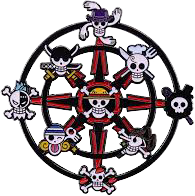
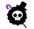

Sistema de Linhagens
Linhagens são basicamente Pathings de Skills
Para alguns jogadores o sistema de habilidades encontrado no One Piece Online não é totalmente desconhecido, existem linhagens dentro do jogo onde cada uma possui suas particularidades, as profissões não tem ligação direta com a linhagem que o jogador escolher para montar sua build, nada impede o jogador de mesclar habilidades de diversas linhagens montando um personagem da maneira que preferir, claro desde que respeitando algumas limitações base.
Linhagens Disponiveis
Rokushiki - Habilidades relacionadas a CP9, tem usos diversos como por exemplo o Soru (Passo Etéreo) e Tekkai (Corpo Fechado).
Arte Marcial - Habilidades ligadas ao domínio do corpo, aumento de vida, proteção de aliados, junto com dano massivo em alvo único e recargas medianas.
Combo - Variante da linhagem Arte Marcial, compete a combos rápidos para jogadores que pretendem segurar seus inimigos próximos para executá-los com agilidade.
Black Legs - Habilidades de chute com variantes para alvos isolados ou habilidades em área, essa linhagem também é especialista em golpes interligados ao atributo "Crítico".

Ittoryu (1 Espada) - Espadachins que seguem a linhagem ittoryu possuem habilidades de dano em área porém são bem mais lentos, seu forte está em aniquilar um alvo específico no campo de batalha.
Nitoryu (2 Espadas) - Espadachins focados em auto-ataque, essa linhagem possui diversas habilidades de alvo isolado podendo alcancar um dano elevado por usar duas armas, independente porém entra em apuros caso seja mobado.
Santoryu (3 Espadas) - Variante da linhagem Nitoryu, tem habilidades de alvo unico e AoE porém depende da ativação da terceira espada para usar suas habilidades.
Compartilhadas Espadachim - Habilidades de buffs ligadas ao uso de espadas, podem ser usadas por espadachins de uma ou duas armas.

Pachinko (Estilingue) - Habilidades de alcance moderado e recargas rápidas, possui habilidades de alvo único ou AoE, além de buffs de precisão, agilidade e acerto crítico.
Armas de Fogo (Pistola e Rifle) - As pistolas dispoem de habilidades de médio alcance e recargas rápidas, podendo também ser construída de modo a maximizar sua capacidade de disparar apenas em auto-ataque. Já os Rifles possuem maior dano a alvo único com recargas longas, a classe também pode se especializar em auto-ataques críticos porém não dispoe da mesma agilidade das pistolas.

Medicina - Linhagem ligada a habilidades de suporte e melhoria de membros do grupo, buffs, remoção de status negativos, cura, etc.
Farmacologia - Variante da linhagem médica, habilidades de dano com requisito de itens (frascos de ácido e fogo grego).

Climatologia (Arte do Tempo) - Linhagem mágica possui habilidades de dano mágico de diversas vertentes, alvo único, AoE, recargas medianas e buffs de dano mágico/redução de conjuração.

Cyborg - Habilidades de defesa e resistência em alto nível acompanhada de tiros, socos explosivos, debuffs, e AoE.

Musicista - Linhagem voltada para melhoria do grupo, buffs de vida, redução de recarga, melhoria no ganho de experiência, habilidades de controle de grupo e dano em alvo isolado, a classe que simplesmente da um show no campo de batalha.